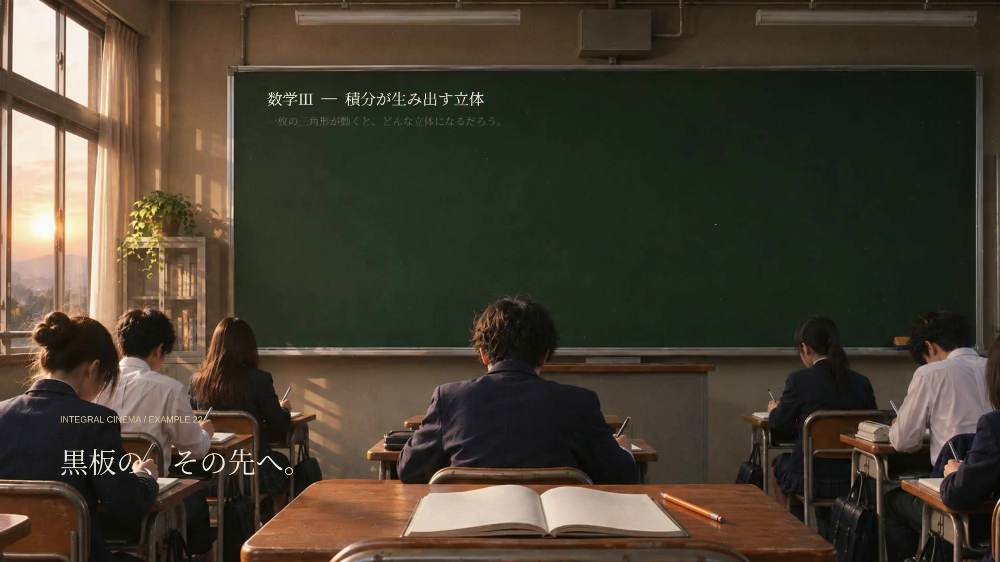
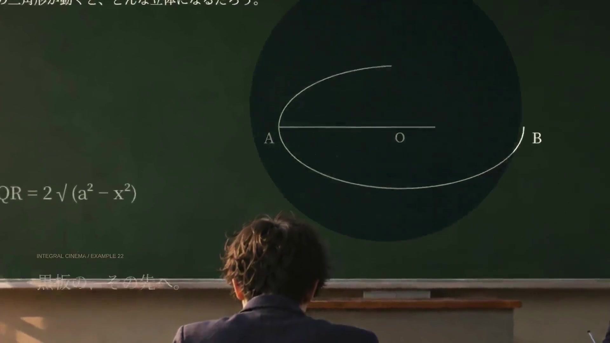
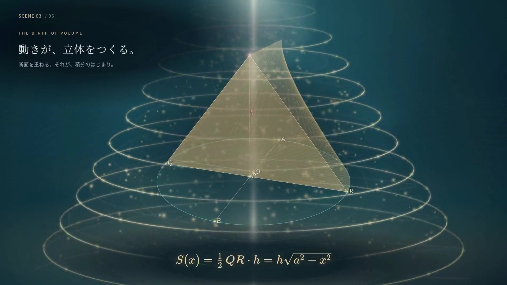
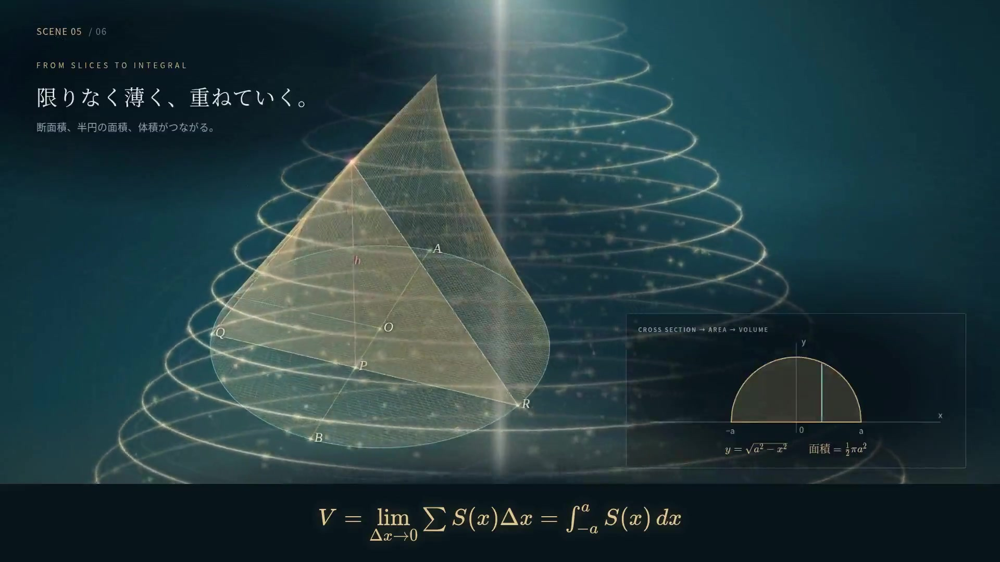
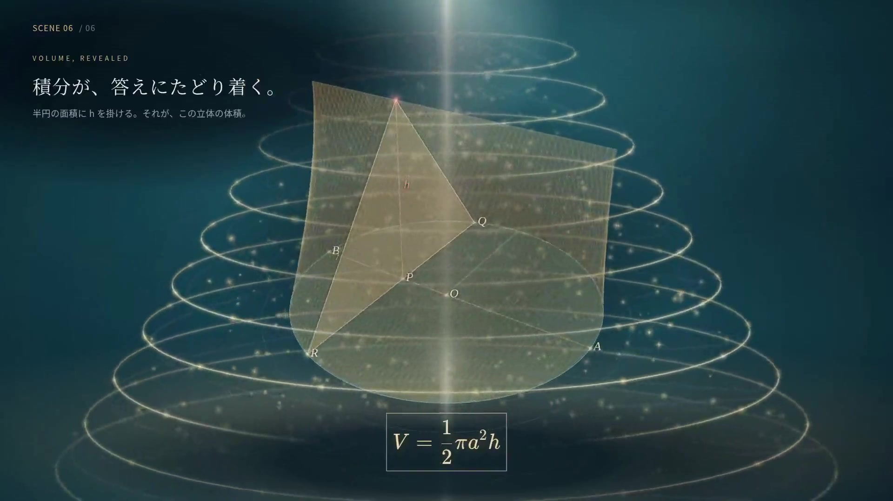
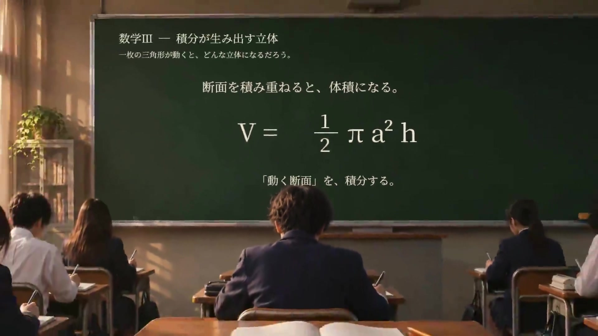

夕方の教室から黒板へ。チョークの図形が光の粒子になり、動く断面が立体を作る数学の空間へ入っていく映画です。
参照画像の構図に合わせ、中央の白金色の光柱、上昇・旋回する水平光輪、螺旋状に集まる金色の粒子をアニメーション化しました。90秒版・30秒版と教材の背景に反映しています。
| 90秒版 | 内容 |
|---|---|
| 0〜14秒 | 教室、チョーク、黒板の光の入口、円の出現 |
| 14〜26秒 | 弦QRと一定の高さhから三角形が立ち上がる |
| 26〜44秒 | 三角形が移動し、通過した部分に立体が残る |
| 44〜58秒 | 三平方の定理で弦の長さを求める |
| 58〜75秒 | 断面を細かく重ね、半円の面積と積分につなげる |
| 75〜84.8秒 | 体積 V=½πa²h が完成する |
| 84.8〜90秒 | 答えが描かれた教室の黒板へ戻る |
30秒版はInstagramの画面表示に配慮した内枠を設け、縦型に再配置し、教室の導入と立体の生成・積分・答えを短くまとめています。

教室から黒板へ

黒板の中へ入り込む

動く断面が立体を作る

断面と半円の面積が積分につながる

体積の答え

黒板に答えを残す
元の教材の操作機能・90秒WebGL版・初回の30秒MP4を保持し、映画を追加しました。元のアプリとスタイルは公開済みコードと同一の保存コピーとして残しています。
教室は、教材ライブラリにあるAI生成画像を立体空間のセットに使ったカメラ演出です。実写の授業撮影ではありません。黒板のチョーク・光・粒子を動かし、数学部分は教材と同じ座標モデルによる3Dメッシュを描画しています。音楽・効果音は本作品用の手続き生成で、ナレーションはありません。
90秒版は1920×1080、縦型版は1080×1920。ともに60fps、H.264/AACです。